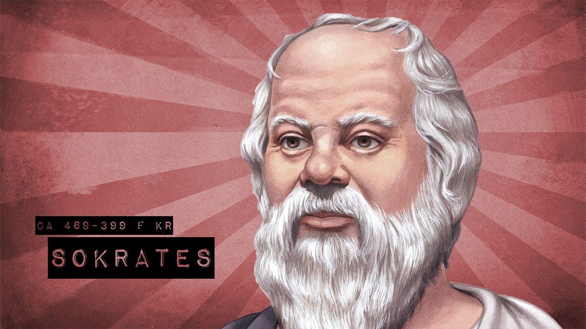
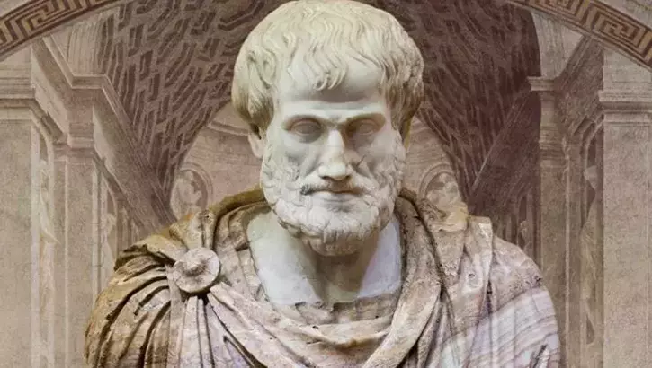

Benim Hayatım
Handan Hayrettin Yelkikanat Felsefe Dersi Performans Ödevimi "Sokratesin Blogu" Adı Altında Sokratese Aitmiş Gibi Bir Site Tasarladım ve Yayınladım. Umarım Sokratesi Daha İyi Tanımanıza Yardımcı Olur...

Ben Nerede Doğdum ?
M.Ö. 469’ta, heykelci Sofroniskos ile ebe Fenarete'nin oğlu olarak Alopeke, Attika’da dünyaya geldi. Her zaman yazmak yerine konuşmayı ve sorgulamayı tercih eden Socrates’in yazılı hiçbir çalışması bulunmamaktaydı..
Devamı →
Ben Kimim ?
M.Ö. 469, MÖ 399 yılları arasında yaşamıştır. Yunan filozof. Felsefenin kurucularından biri olarak kabul edilir. İnsanın kendisiyle, evrenle ve toplumla olan ilişkisinin ne olduğunu ve ne olması gerektiğini araştırmış olan Socrates, temelleri “Soruya Soruyla Karşılık Verme”...
Devamı →
Mesleğim Neydi ?
Socrates’in düşüncelerinin bir kısmı Plato’nunkilerden farklı olmasına rağmen, tarihçiler var olan kaynaklara dayanarak, düşünürün savunduklarıyla ilgili olarak ayrım yapmada sıkıntı çektiler..
Devamı →

Biyografim
Hayatını insanlığın kişisel gelişimine adamış olan filozofun öğretileri, etkilerini yüzyıllardır sürdürmektedir. Socrates felsefesini ve dünya görüşünü dialoglar yoluyla yaymış, bir şey yazmamıştır. Bilgiye ulaşmanın anahtarlarını insanoğluna hediye ederek, insanlık tarihinin gerçek kahramanlarından biri olmuştur...
Devamı →